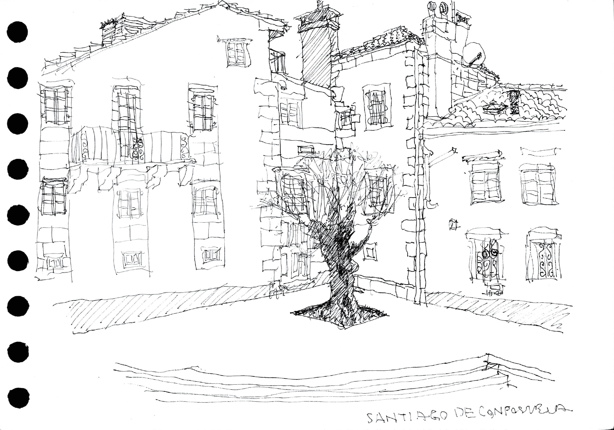

<div class="home">

    <br><br><br><br></img><br><br><br>
    What if a carpenter start to reorganise computers as he/she want?<br><br><br>

    <div class="grid post-list">
        <br>
        {% for post in site.posts %}
        <div class="unit half">
            <!-- <span class="post-meta">{{ post.date | date: "%b %-d, %Y" }}</span> -->
            <a class="post-link" href="{{ post.url | prepend: site.baseurl }}">{{ post.title }}</a>
        </div>
        {% endfor %}
    </div>

</div>
